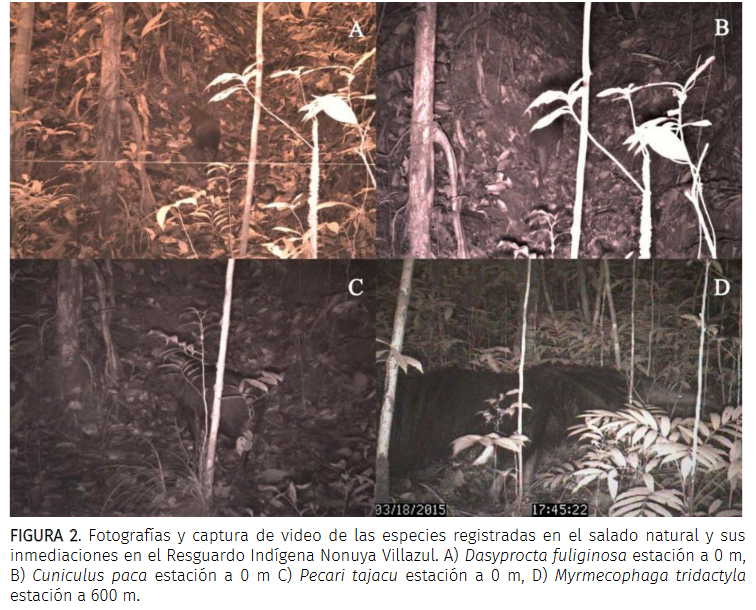

Andrade-Ponce, G. (2020). Registros de mamíferos terrestres en un salado natural del Resguardo Indígena Nonuya-Villazul departamento del Amazonas, Colombia

Resumen
Los salados naturales son lugares con altas concentraciones de minerales y arcillas, donde diversas especies realizan geofagia. En esta nota presentamos registros de mamíferos terrestres en un salado ubicado en la cuenca media del Río Caquetá, dentro del resguardo indígena Nonuya Villazul. Se utilizaron cuatro cámaras trampa y se registraron un total de cuatro especies de mamíferos, de los cuales la más frecuente fue Cuniculus paca. Tres de las especies registradas presentan una dieta mayormente frugívora y son comúnmente registrados en salados amazónicos. Myrmecophaga tridactyla es el único mamífero registrado que no realiza geofagia. Los salados naturales son lugares de importancia ecológica y de conservación, ya que en ellos convergen diversidad de mamíferos principalmente herbívoros, no obstante, para entender las características que influyen sobre la presencia o abundancia de estas especies en salados, es necesario un mayor esfuerzo de muestreo en estos y otros ecosistemas con presencia de salados.
Abstract
Salt licks are sites with high mineral and clay concentrations, where various species perform geophagy. This note presents the records for four species of terrestrial mammals in a natural salt in the middle basin of the Caquetá River, within the Nonuya Villazul Indigenous Reserve. We used four camera traps on a 600 m transect from the salt, with a sampling effort of 136 days/trap. The most frequent species was Cuniculus paca, followed by Dasyprocta fuliginosa and Pecari tajacu, while Myrmecophaga tridactyla was the least frequent species, only recorded in the farthest camera trap from the salt lick. The natural salt licks are places with ecological and conservation importance, due to the high diversity of mammals, mainly herbivores, that converge there. However, to understand how the physicochemical characteristics of the habitat, the landscape or the human presence, influence the abundance of mammals, it is necessary to carry out studies with larger sampling effort in the Colombian Amazon.